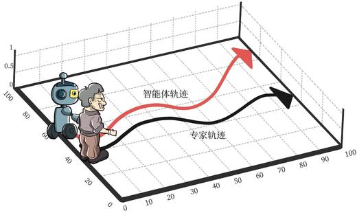
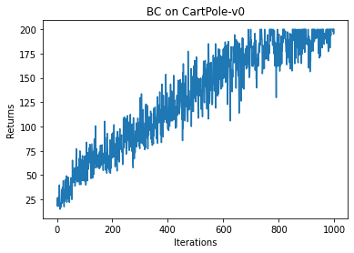
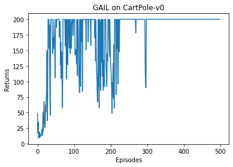

- 15.1 简介
- 15.2 行为克隆
- 15.3 生成式对抗模仿学习
- 15.4 代码实践
- 15.4.1 生成专家数据
- 15.4.2 行为克隆的代码实践
- 15.4.3 生成式对抗模仿学习的代码实践
- 15.5 总结
- 15.6 参考文献
第 15 章 模仿学习
15.1 简介
虽然强化学习不需要有监督学习中的标签数据，但它十分依赖奖励函数的设置。有时在奖励函数上做一些微小的改动，训练出来的策略就会有天差地别。在很多现实场景中，奖励函数并未给定，或者奖励信号极其稀疏，此时随机设计奖励函数将无法保证强化学习训练出来的策略满足实际需要。例如，对于无人驾驶车辆智能体的规控，其观测是当前的环境感知恢复的 3D 局部环境，动作是车辆接下来数秒的具体路径规划，那么奖励是什么？如果只是规定正常行驶而不发生碰撞的奖励为+1，发生碰撞为-100，那么智能体学习的结果则很可能是找个地方停滞不前。具体能帮助无人驾驶小车规控的奖励函数往往需要专家的精心设计和调试。
假设存在一个专家智能体，其策略可以看成最优策略，我们就可以直接模仿这个专家在环境中交互的状态动作数据来训练一个策略，并且不需要用到环境提供的奖励信号。模仿学习（imitation learning）研究的便是这一类问题，在模仿学习的框架下，专家能够提供一系列状态动作对
- 行为克隆（behavior cloning，BC）
- 逆强化学习（inverse RL）
- 生成式对抗模仿学习（generative adversarial imitation learning，GAIL）
在本章将主要介绍行为克隆方法和生成式对抗模仿学习方法。尽管逆强化学习有良好的学术贡献，但由于其计算复杂度较高，实际应用的价值较小。
15.2 行为克隆
行为克隆（BC）就是直接使用监督学习方法，将专家数据中
其中，
在训练数据量比较大的时候，BC 能够很快地学习到一个不错的策略。例如，围棋人工智能 AlphaGo 就是首先在 16 万盘棋局的 3000 万次落子数据中学习人类选手是如何下棋的，仅仅凭这个行为克隆方法，AlphaGo 的棋力就已经超过了很多业余围棋爱好者。由于 BC 的实现十分简单，因此在很多实际场景下它都可以作为策略预训练的方法。BC 能使得策略无须在较差时仍然低效地通过和环境交互来探索较好的动作，而是通过模仿专家智能体的行为数据来快速达到较高水平，为接下来的强化学习创造一个高起点。
BC 也存在很大的局限性，该局限在数据量比较小的时候犹为明显。具体来说，由于通过 BC 学习得到的策略只是拿小部分专家数据进行训练，因此 BC 只能在专家数据的状态分布下预测得比较准。然而，强化学习面对的是一个序贯决策问题，通过 BC 学习得到的策略在和环境交互过程中不可能完全学成最优，只要存在一点偏差，就有可能导致下一个遇到的状态是在专家数据中没有见过的。此时，由于没有在此状态（或者比较相近的状态）下训练过，策略可能就会随机选择一个动作，这会导致下一个状态进一步偏离专家策略遇到的的数据分布。最终，该策略在真实环境下不能得到比较好的效果，这被称为行为克隆的复合误差（compounding error）问题，如图 15-1 所示。

15.3 生成式对抗模仿学习
生成式对抗模仿学习（generative adversarial imitation learning，GAIL）是 2016 年由斯坦福大学研究团队提出的基于生成式对抗网络的模仿学习，它诠释了生成式对抗网络的本质其实就是模仿学习。GAIL 实质上是模仿了专家策略的占用度量
其中
![]()
第 3 章介绍过一个策略和给定 MDP 交互的占用度量呈一一对应的关系。因此，模仿学习的本质就是通过更新策略使其占用度量尽量靠近专家的占用度量，而这正是 GAIL 的训练目标。由于一旦策略改变，其占用度量就会改变，因此为了训练好最新的判别器，策略需要不断和环境做交互，采样出最新的状态动作对样本。
15.4 代码实践
15.4.1 生成专家数据
首先，我们需要有一定量的专家数据，为此，预先通过 PPO 算法训练出一个表现良好的专家模型，再利用专家模型生成专家数据。本次代码实践的环境是 CartPole-v0，以下是 PPO 代码内容。
import gymimport torchimport torch.nn.functional as Fimport torch.nn as nnimport numpy as npimport matplotlib.pyplot as pltfrom tqdm import tqdmimport randomimport rl_utilsclass PolicyNet(torch.nn.Module):def __init__(self, state_dim, hidden_dim, action_dim):super(PolicyNet, self).__init__()self.fc1 = torch.nn.Linear(state_dim, hidden_dim)self.fc2 = torch.nn.Linear(hidden_dim, action_dim)def forward(self, x):x = F.relu(self.fc1(x))return F.softmax(self.fc2(x), dim=1)class ValueNet(torch.nn.Module):def __init__(self, state_dim, hidden_dim):super(ValueNet, self).__init__()self.fc1 = torch.nn.Linear(state_dim, hidden_dim)self.fc2 = torch.nn.Linear(hidden_dim, 1)def forward(self, x):x = F.relu(self.fc1(x))return self.fc2(x)class PPO:''' PPO算法,采用截断方式 '''def __init__(self, state_dim, hidden_dim, action_dim, actor_lr, critic_lr,lmbda, epochs, eps, gamma, device):self.actor = PolicyNet(state_dim, hidden_dim, action_dim).to(device)self.critic = ValueNet(state_dim, hidden_dim).to(device)self.actor_optimizer = torch.optim.Adam(self.actor.parameters(),lr=actor_lr)self.critic_optimizer = torch.optim.Adam(self.critic.parameters(),lr=critic_lr)self.gamma = gammaself.lmbda = lmbdaself.epochs = epochs # 一条序列的数据用于训练轮数self.eps = eps # PPO中截断范围的参数self.device = devicedef take_action(self, state):state = torch.tensor([state], dtype=torch.float).to(self.device)probs = self.actor(state)action_dist = torch.distributions.Categorical(probs)action = action_dist.sample()return action.item()def update(self, transition_dict):states = torch.tensor(transition_dict['states'],dtype=torch.float).to(self.device)actions = torch.tensor(transition_dict['actions']).view(-1, 1).to(self.device)rewards = torch.tensor(transition_dict['rewards'],dtype=torch.float).view(-1, 1).to(self.device)next_states = torch.tensor(transition_dict['next_states'],dtype=torch.float).to(self.device)dones = torch.tensor(transition_dict['dones'],dtype=torch.float).view(-1, 1).to(self.device)td_target = rewards + self.gamma * self.critic(next_states) * (1 -dones)td_delta = td_target - self.critic(states)advantage = rl_utils.compute_advantage(self.gamma, self.lmbda,td_delta.cpu()).to(self.device)old_log_probs = torch.log(self.actor(states).gather(1,actions)).detach()for _ in range(self.epochs):log_probs = torch.log(self.actor(states).gather(1, actions))ratio = torch.exp(log_probs - old_log_probs)surr1 = ratio * advantagesurr2 = torch.clamp(ratio, 1 - self.eps,1 + self.eps) * advantage # 截断actor_loss = torch.mean(-torch.min(surr1, surr2)) # PPO损失函数critic_loss = torch.mean(F.mse_loss(self.critic(states), td_target.detach()))self.actor_optimizer.zero_grad()self.critic_optimizer.zero_grad()actor_loss.backward()critic_loss.backward()self.actor_optimizer.step()self.critic_optimizer.step()actor_lr = 1e-3critic_lr = 1e-2num_episodes = 250hidden_dim = 128gamma = 0.98lmbda = 0.95epochs = 10eps = 0.2device = torch.device("cuda") if torch.cuda.is_available() else torch.device("cpu")env_name = 'CartPole-v0'env = gym.make(env_name)env.seed(0)torch.manual_seed(0)state_dim = env.observation_space.shape[0]action_dim = env.action_space.nppo_agent = PPO(state_dim, hidden_dim, action_dim, actor_lr, critic_lr, lmbda,epochs, eps, gamma, device)return_list = rl_utils.train_on_policy_agent(env, ppo_agent, num_episodes)
Iteration 0: 0%| | 0/25 [00:00<?, ?it/s]/usr/local/lib/python3.7/dist-packages/ipykernel_launcher.py:48: UserWarning: Creating a tensor from a list of numpy.ndarrays is extremely slow. Please consider converting the list to a single numpy.ndarray with numpy.array() before converting to a tensor. (Triggered internally at ../torch/csrc/utils/tensor_new.cpp:201.)Iteration 0: 100%|██████████| 25/25 [00:00<00:00, 29.67it/s, episode=20, return=40.700]Iteration 1: 100%|██████████| 25/25 [00:01<00:00, 15.19it/s, episode=45, return=182.800]Iteration 2: 100%|██████████| 25/25 [00:01<00:00, 14.11it/s, episode=70, return=176.100]Iteration 3: 100%|██████████| 25/25 [00:01<00:00, 14.44it/s, episode=95, return=191.500]Iteration 4: 100%|██████████| 25/25 [00:01<00:00, 14.45it/s, episode=120, return=151.300]Iteration 5: 100%|██████████| 25/25 [00:02<00:00, 12.15it/s, episode=145, return=200.000]Iteration 6: 100%|██████████| 25/25 [00:01<00:00, 13.47it/s, episode=170, return=200.000]Iteration 7: 100%|██████████| 25/25 [00:01<00:00, 13.20it/s, episode=195, return=200.000]Iteration 8: 100%|██████████| 25/25 [00:01<00:00, 14.43it/s, episode=220, return=188.100]Iteration 9: 100%|██████████| 25/25 [00:01<00:00, 13.13it/s, episode=245, return=200.000]
接下来开始生成专家数据。因为车杆环境比较简单，我们只生成一条轨迹，并且从中采样 30 个状态动作对样本
def sample_expert_data(n_episode):states = []actions = []for episode in range(n_episode):state = env.reset()done = Falsewhile not done:action = ppo_agent.take_action(state)states.append(state)actions.append(action)next_state, reward, done, _ = env.step(action)state = next_statereturn np.array(states), np.array(actions)env.seed(0)torch.manual_seed(0)random.seed(0)n_episode = 1expert_s, expert_a = sample_expert_data(n_episode)n_samples = 30 # 采样30个数据random_index = random.sample(range(expert_s.shape[0]), n_samples)expert_s = expert_s[random_index]expert_a = expert_a[random_index]
15.4.2 行为克隆的代码实践
在 BC 中，我们将专家数据中的
class BehaviorClone:def __init__(self, state_dim, hidden_dim, action_dim, lr):self.policy = PolicyNet(state_dim, hidden_dim, action_dim).to(device)self.optimizer = torch.optim.Adam(self.policy.parameters(), lr=lr)def learn(self, states, actions):states = torch.tensor(states, dtype=torch.float).to(device)actions = torch.tensor(actions).view(-1, 1).to(device)log_probs = torch.log(self.policy(states).gather(1, actions))bc_loss = torch.mean(-log_probs) # 最大似然估计self.optimizer.zero_grad()bc_loss.backward()self.optimizer.step()def take_action(self, state):state = torch.tensor([state], dtype=torch.float).to(device)probs = self.policy(state)action_dist = torch.distributions.Categorical(probs)action = action_dist.sample()return action.item()def test_agent(agent, env, n_episode):return_list = []for episode in range(n_episode):episode_return = 0state = env.reset()done = Falsewhile not done:action = agent.take_action(state)next_state, reward, done, _ = env.step(action)state = next_stateepisode_return += rewardreturn_list.append(episode_return)return np.mean(return_list)env.seed(0)torch.manual_seed(0)np.random.seed(0)lr = 1e-3bc_agent = BehaviorClone(state_dim, hidden_dim, action_dim, lr)n_iterations = 1000batch_size = 64test_returns = []with tqdm(total=n_iterations, desc="进度条") as pbar:for i in range(n_iterations):sample_indices = np.random.randint(low=0,high=expert_s.shape[0],size=batch_size)bc_agent.learn(expert_s[sample_indices], expert_a[sample_indices])current_return = test_agent(bc_agent, env, 5)test_returns.append(current_return)if (i + 1) % 10 == 0:pbar.set_postfix({'return': '%.3f' % np.mean(test_returns[-10:])})pbar.update(1)
进度条: 100%|██████████| 1000/1000 [03:05<00:00, 5.40it/s, return=199.320]
iteration_list = list(range(len(test_returns)))plt.plot(iteration_list, test_returns)plt.xlabel('Iterations')plt.ylabel('Returns')plt.title('BC on {}'.format(env_name))plt.show()

我们发现 BC 无法学习到最优策略（不同设备运行结果可能会有不同），这主要是因为在数据量比较少的情况下，学习容易发生过拟合。
15.4.3 生成式对抗模仿学习的代码实践
接下来我们实现 GAIL 的代码。
首先实现判别器模型，其模型架构为一个两层的全连接网络，模型输入为一个状态动作对，输出一个概率标量。
class Discriminator(nn.Module):def __init__(self, state_dim, hidden_dim, action_dim):super(Discriminator, self).__init__()self.fc1 = torch.nn.Linear(state_dim + action_dim, hidden_dim)self.fc2 = torch.nn.Linear(hidden_dim, 1)def forward(self, x, a):cat = torch.cat([x, a], dim=1)x = F.relu(self.fc1(cat))return torch.sigmoid(self.fc2(x))
接下来正式实现 GAIL 的代码。每一轮迭代中，GAIL 中的策略和环境交互，采样新的状态动作对。基于专家数据和策略新采样的数据，首先训练判别器，然后将判别器的输出转换为策略的奖励信号，指导策略用 PPO 算法做训练。
class GAIL:def __init__(self, agent, state_dim, action_dim, hidden_dim, lr_d):self.discriminator = Discriminator(state_dim, hidden_dim,action_dim).to(device)self.discriminator_optimizer = torch.optim.Adam(self.discriminator.parameters(), lr=lr_d)self.agent = agentdef learn(self, expert_s, expert_a, agent_s, agent_a, next_s, dones):expert_states = torch.tensor(expert_s, dtype=torch.float).to(device)expert_actions = torch.tensor(expert_a).to(device)agent_states = torch.tensor(agent_s, dtype=torch.float).to(device)agent_actions = torch.tensor(agent_a).to(device)expert_actions = F.one_hot(expert_actions, num_classes=2).float()agent_actions = F.one_hot(agent_actions, num_classes=2).float()expert_prob = self.discriminator(expert_states, expert_actions)agent_prob = self.discriminator(agent_states, agent_actions)discriminator_loss = nn.BCELoss()(agent_prob, torch.ones_like(agent_prob)) + nn.BCELoss()(expert_prob, torch.zeros_like(expert_prob))self.discriminator_optimizer.zero_grad()discriminator_loss.backward()self.discriminator_optimizer.step()rewards = -torch.log(agent_prob).detach().cpu().numpy()transition_dict = {'states': agent_s,'actions': agent_a,'rewards': rewards,'next_states': next_s,'dones': dones}self.agent.update(transition_dict)env.seed(0)torch.manual_seed(0)lr_d = 1e-3agent = PPO(state_dim, hidden_dim, action_dim, actor_lr, critic_lr, lmbda,epochs, eps, gamma, device)gail = GAIL(agent, state_dim, action_dim, hidden_dim, lr_d)n_episode = 500return_list = []with tqdm(total=n_episode, desc="进度条") as pbar:for i in range(n_episode):episode_return = 0state = env.reset()done = Falsestate_list = []action_list = []next_state_list = []done_list = []while not done:action = agent.take_action(state)next_state, reward, done, _ = env.step(action)state_list.append(state)action_list.append(action)next_state_list.append(next_state)done_list.append(done)state = next_stateepisode_return += rewardreturn_list.append(episode_return)gail.learn(expert_s, expert_a, state_list, action_list,next_state_list, done_list)if (i + 1) % 10 == 0:pbar.set_postfix({'return': '%.3f' % np.mean(return_list[-10:])})pbar.update(1)
进度条: 100%|██████████| 500/500 [00:35<00:00, 14.20it/s, return=200.000]
iteration_list = list(range(len(return_list)))plt.plot(iteration_list, return_list)plt.xlabel('Episodes')plt.ylabel('Returns')plt.title('GAIL on {}'.format(env_name))plt.show()

通过上面两个实验的对比我们可以直观地感受到，在数据样本有限的情况下，BC 不能学习到最优策略，但是 GAIL 在相同的专家数据下可以取得非常好的结果。这一方面归因于 GAIL 的训练目标（拉近策略和专家的占用度量）十分贴合模仿学习任务的目标，避免了 BC 中的复合误差问题；另一方面得益于 GAIL 训练中，策略可以和环境交互出更多的数据，以此训练判别器，进而生成对基于策略“量身定做”的指导奖励信号。
15.5 总结
本章讲解了模仿学习的基础概念，即根据一些专家数据来学习一个策略，数据中不包含奖励，和环境交互也不能获得奖励。本章还介绍了模仿学习中的两类方法，分别是行为克隆（BC）和生成式对抗模仿学习（GAIL）。通过实验对比发现，在少量专家数据的情况下，GAIL 能获得更好的效果。
此外，逆向强化学习（IRL）也是模仿学习中的重要方法，它假设环境的奖励函数应该使得专家轨迹获得最高的奖励值，进而学习背后的奖励函数，最后基于该奖励函数做正向强化学习，从而得到模仿策略。感兴趣的读者可以查阅相关文献进行学习。
15.6 参考文献
[1] SYED U, BOWLING M, SCHAPIRE R E. Apprenticeship learning using linear programming [C]// Proceedings of the 25th international conference on Machine learning, 2008: 1032-1039.
[2] HO J, ERMON S. Generative adversarial imitation learning [J]. Advances in neural information processing systems 2016, 29: 4565-4573.
[3] ABBEEL P, NG A Y. Apprenticeship learning via inverse reinforcement learning [C] // Proceedings of the twenty-first international conference on machine learning, 2004.